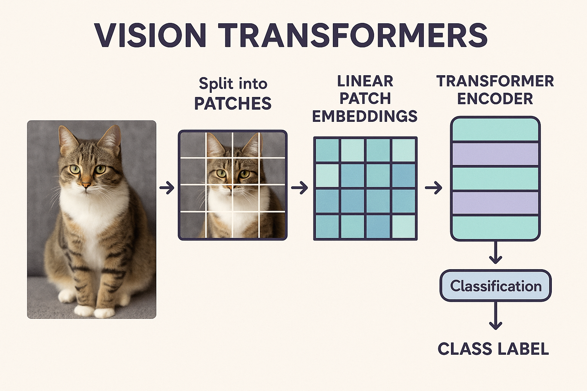

Vision Transformers: A Complete Visual Guide

Table of Contents
- Introduction
- Key Concepts
- Image Patch Embedding
- Positional Encoding
- Self-Attention Mechanism
- Transformer Block Architecture
- Complete ViT Pipeline
- Mathematical Formulation
- Implementation Details
- Advantages and Limitations
- Applications
- Comparison with CNNs
Introduction
Vision Transformers (ViTs) represent a paradigm shift in computer vision, adapting the successful transformer architecture from natural language processing to image analysis. Instead of treating images as spatial grids processed through convolutional layers, ViTs treat images as sequences of patches, similar to how text is processed as sequences of tokens.
Core Innovation
- Traditional CNNs: Build hierarchical features through local convolutions
- Vision Transformers: Model global relationships through self-attention on image patches
Key Concepts
1. Sequence-Based Image Processing
Original Image (224×224) → Patches (16×16) → Linear Embeddings → Transformer2. Global Context from Layer One
Unlike CNNs that build global understanding through deep stacks of local operations, ViTs can model relationships between any two patches from the first layer.
3. Minimal Inductive Bias
ViTs make fewer assumptions about image structure, learning spatial relationships purely from data.
Image Patch Embedding
The foundation of Vision Transformers is converting images into sequences of patches.
Step-by-Step Process
1. Image Patching
Original Image (H×W×C)
↓
Divide into patches
↓
N patches of size (P×P×C)
Where: N = (H×W)/(P×P)2. Visual Representation
Original 224×224 Image:
┌─────────────────────────┐
│ ■ ■ ■ ■ │ ■ ■ ■ ■ │... │
│ ■ ■ ■ ■ │ ■ ■ ■ ■ │ │
│ ■ ■ ■ ■ │ ■ ■ ■ ■ │ │
│ ■ ■ ■ ■ │ ■ ■ ■ ■ │ │
├─────────┼─────────┼────┤
│ ■ ■ ■ ■ │ ■ ■ ■ ■ │... │
│ ... │ ... │ │
└─────────────────────────┘
Becomes 196 patches (14×14 grid of 16×16 patches)3. Linear Projection
Each patch is flattened and linearly projected to create embeddings:
Patch (16×16×3) → Flatten → Vector (768,) → Linear Layer → Embedding (D,)Patch Embedding Visualization
Patch 1: [0.2, -0.1, 0.8, 0.3, ..., 0.6] (768 dimensions)
Patch 2: [0.5, 0.2, -0.3, 0.7, ..., -0.1]
Patch 3: [0.1, 0.9, 0.4, -0.2, ..., 0.8]
...
Patch 196: [-0.3, 0.6, 0.1, 0.9, ..., 0.4]Positional Encoding
Since transformers don’t inherently understand spatial relationships, positional information must be explicitly added.
Types of Positional Encoding
1. Learnable Position Embeddings
# Pseudocode
position_embeddings = LearnableParameter(size=(num_patches + 1, embedding_dim))
patch_embeddings = patch_embeddings + position_embeddings2. 2D Positional Encoding
Position (0,0): [sin(0/10000^0), cos(0/10000^0), sin(0/10000^1), ...]
Position (0,1): [sin(1/10000^0), cos(1/10000^0), sin(1/10000^1), ...]
Position (1,0): [sin(14/10000^0), cos(14/10000^0), sin(14/10000^1), ...]Visualization of Position Information
Grid positions for 4×4 patches:
┌────┬────┬────┬────┐
│(0,0)│(0,1)│(0,2)│(0,3)│
├────┼────┼────┼────┤
│(1,0)│(1,1)│(1,2)│(1,3)│ → Unique embedding for each position
├────┼────┼────┼────┤
│(2,0)│(2,1)│(2,2)│(2,3)│
├────┼────┼────┼────┤
│(3,0)│(3,1)│(3,2)│(3,3)│
└────┴────┴────┴────┘Self-Attention Mechanism
The heart of the transformer is the self-attention mechanism, allowing each patch to attend to all other patches.
Mathematical Foundation
Attention(Q,K,V) = softmax(QK^T/√d_k)V
Where:
Q = Query matrix (what information we're looking for)
K = Key matrix (what information is available)
V = Value matrix (the actual information content)Multi-Head Attention
# Pseudocode for multi-head attention
for head in range(num_heads):
Q_h = X @ W_q_h # Linear projection for queries
K_h = X @ W_k_h # Linear projection for keys
V_h = X @ W_v_h # Linear projection for values
attention_h = softmax(Q_h @ K_h.T / sqrt(d_k)) @ V_h
# Concatenate all heads and project
output = concat(attention_1, ..., attention_h) @ W_oAttention Pattern Visualization
Attention weights for patch at position (1,1):
0 1 2 3 4 5 6 7 8
┌─────────────────────────────────┐
0 │ .1 .05 .02 .01 .03 .02 .01 .01 │
1 │ .05 .8 .05 .02 .01 .02 .01 .01 │ ← High attention to itself
2 │ .02 .05 .1 .03 .01 .01 .02 .01 │
3 │ .01 .02 .03 .05 .02 .01 .01 .01 │
└─────────────────────────────────┘
↑
High attention to adjacent patchesAttention Flow Diagram
Input Patches → Q, K, V Projections → Attention Scores → Weighted Values → Output
[P1, P2, P3, ...]
↓
[Q1] [K1] [V1]
[Q2] [K2] [V2]
[Q3] [K3] [V3]
[...] [...] [...]
↓
Attention Matrix
┌─────────────┐
│ .8 .1 .05 │ ← P1 attends to P1, P2, P3
│ .2 .7 .1 │ ← P2 attends to P1, P2, P3
│ .1 .2 .7 │ ← P3 attends to P1, P2, P3
└─────────────┘
↓
Weighted OutputTransformer Block Architecture
Each transformer block consists of two main components with residual connections.
Block Structure Diagram
Input
↓
┌─────────────────────────┐
│ Multi-Head Attention │
└─────────────────────────┘
↓
┌─────────────────────────┐
│ Add & Norm │ ← Residual connection + Layer Normalization
└─────────────────────────┘
↓
┌─────────────────────────┐
│ Feed Forward Network │
└─────────────────────────┘
↓
┌─────────────────────────┐
│ Add & Norm │ ← Residual connection + Layer Normalization
└─────────────────────────┘
↓
OutputDetailed Component Breakdown
1. Multi-Head Self-Attention
# Simplified implementation
def multi_head_attention(x, num_heads=12):
# x shape: (batch_size, num_patches, embed_dim)
head_dim = embed_dim // num_heads
# Split into heads
q = x.reshape(batch_size, num_patches, num_heads, head_dim)
k = x.reshape(batch_size, num_patches, num_heads, head_dim)
v = x.reshape(batch_size, num_patches, num_heads, head_dim)
# Compute attention
scores = (q @ k.transpose(-2, -1)) / sqrt(head_dim)
attention = softmax(scores)
# Apply attention to values
output = attention @ v
return output.reshape(batch_size, num_patches, embed_dim)2. Feed Forward Network
def feed_forward(x, hidden_dim=3072):
# Two linear layers with GELU activation
x = linear_1(x) # (embed_dim,) → (hidden_dim,)
x = gelu(x) # Non-linear activation
x = dropout(x) # Regularization
x = linear_2(x) # (hidden_dim,) → (embed_dim,)
return x3. Layer Normalization
def layer_norm(x, eps=1e-6):
mean = x.mean(dim=-1, keepdim=True)
std = x.std(dim=-1, keepdim=True)
return (x - mean) / (std + eps) * gamma + betaComplete ViT Pipeline
End-to-End Architecture
Image (224×224×3)
↓
┌─────────────────────────┐
│ Patch Embedding │ → 196 patches of 16×16
│ + Position Embedding │ → Add spatial information
└─────────────────────────┘
↓
┌─────────────────────────┐
│ [CLS] Token Addition │ → Prepend classification token
└─────────────────────────┘
↓
┌─────────────────────────┐
│ Transformer Block 1 │
│ Transformer Block 2 │
│ ... │ → Stack of L transformer blocks
│ Transformer Block L │
└─────────────────────────┘
↓
┌─────────────────────────┐
│ Extract [CLS] Token │ → Take first token representation
└─────────────────────────┘
↓
┌─────────────────────────┐
│ Classification Head │ → Linear layer + softmax
└─────────────────────────┘
↓
Class ProbabilitiesData Flow Visualization
Step 1: Image → Patches
[Image] → [P1][P2][P3]...[P196]
Step 2: Add CLS token and positions
[CLS][P1+pos1][P2+pos2]...[P196+pos196]
Step 3: Process through transformer blocks
Attention FFN
[CLS] ←→ [P1] ←→ ... ←→ [P196] → [CLS'][P1']...[P196']
↕ ↕ ↕
All patches attend to all other patches
Step 4: Classification
[CLS'] → Linear Layer → [Class1: 0.1, Class2: 0.8, Class3: 0.1]Mathematical Formulation
Core Equations
1. Patch Embedding
X_p = [x_p^1 E; x_p^2 E; ...; x_p^N E] + E_posWhere: - x_p^i is the i-th flattened patch - E is the learnable embedding matrix - E_pos is the positional embedding
2. Multi-Head Self-Attention
MSA(X) = Concat(head_1, ..., head_h)W^O
head_i = Attention(XW_i^Q, XW_i^K, XW_i^V)
Attention(Q,K,V) = softmax(QK^T/√d_k)V3. Transformer Block
X' = MSA(LN(X)) + X # Multi-head attention with residual
X'' = MLP(LN(X')) + X' # Feed-forward with residual
Where:
LN = Layer Normalization
MLP = Multi-Layer Perceptron4. Classification
y = LN(X_L^0)W_head
Where:
X_L^0 is the [CLS] token after L transformer layers
W_head is the classification head matrixImplementation Details
Standard ViT Configurations
ViT-Base/16
- Image Size: 224×224
- Patch Size: 16×16
- Sequence Length: 196 patches + 1 CLS token = 197
- Embedding Dimension: 768
- Number of Heads: 12
- Number of Layers: 12
- MLP Hidden Dimension: 3072
- Parameters: ~86M
ViT-Large/16
- Embedding Dimension: 1024
- Number of Heads: 16
- Number of Layers: 24
- MLP Hidden Dimension: 4096
- Parameters: ~307M
ViT-Huge/14
- Patch Size: 14×14
- Sequence Length: 256 patches + 1 CLS token = 257
- Embedding Dimension: 1280
- Number of Heads: 16
- Number of Layers: 32
- MLP Hidden Dimension: 5120
- Parameters: ~632M
Key Implementation Considerations
1. Input Resolution and Patch Size
# Different configurations
configs = {
'ViT-B/16': {'patch_size': 16, 'image_size': 224},
'ViT-B/32': {'patch_size': 32, 'image_size': 224},
'ViT-L/16': {'patch_size': 16, 'image_size': 384}, # Higher resolution
}2. Training Strategies
Pre-training:
- Large datasets (JFT-300M, ImageNet-21k)
- High resolution images
- Strong data augmentation
Fine-tuning:
- Smaller datasets (ImageNet-1k)
- Higher resolution than pre-training
- Position embedding interpolation3. Position Embedding Interpolation
# When fine-tuning at higher resolution
def interpolate_pos_embed(pos_embed, grid_size):
# Interpolate position embeddings for different grid sizes
old_grid_size = int(sqrt(pos_embed.shape[1] - 1)) # Exclude CLS token
pos_embed = pos_embed[:, 1:, :] # Remove CLS token
pos_embed = pos_embed.reshape(1, old_grid_size, old_grid_size, -1)
pos_embed = F.interpolate(pos_embed, size=grid_size, mode='bicubic')
pos_embed = pos_embed.reshape(1, grid_size * grid_size, -1)
return pos_embedAdvantages and Limitations
✅ Advantages
1. Global Context
- Immediate global receptive field: Unlike CNNs that build global understanding through deep stacks, ViTs can model long-range dependencies from the first layer
- Flexible attention patterns: Can attend to relevant patches regardless of spatial distance
2. Scalability
- Scales well with data: Performance continues to improve with larger datasets
- Efficient parallelization: Self-attention can be computed in parallel across sequence length
3. Transfer Learning
- Strong pre-trained representations: Models trained on large datasets transfer well
- Flexible input sizes: Can handle different resolutions through position embedding interpolation
4. Interpretability
- Attention visualization: Can visualize which patches the model attends to
- Less architectural bias: Learns spatial relationships from data
❌ Limitations
1. Data Requirements
- Needs large datasets: Requires more data than CNNs for equivalent performance
- Poor few-shot performance: Struggles with limited training data
2. Computational Cost
- Quadratic complexity: Self-attention scales O(n²) with sequence length
- Memory intensive: Large memory requirements for long sequences
3. Local Feature Extraction
- Misses fine-grained details: May struggle with tasks requiring precise localization
- No built-in translation equivariance: Unlike CNNs, doesn’t inherently handle spatial translations
Comparison Table
Aspect | CNNs | ViTs
--------------------|--------------------|-----------------------
Inductive Bias | Strong (locality) | Weak (learns from data)
Data Requirements | Moderate | Large
Global Context | Deep layers only | From first layer
Computational Cost | O(n) | O(n²)
Fine-grained Detail | Excellent | Good
Transfer Learning | Good | Excellent
Interpretability | Limited | Good (attention maps)Applications
1. Image Classification
- ImageNet: State-of-the-art results on standard benchmarks
- Fine-grained classification: Birds, flowers, medical images
- Large-scale classification: Handling thousands of classes
Performance Comparison
Model | ImageNet Top-1 | Parameters
----------------|---------------|------------
ResNet-50 | 76.0% | 25M
EfficientNet-B7 | 84.3% | 66M
ViT-B/16 | 84.5% | 86M
ViT-L/16 | 87.8% | 307M2. Object Detection
- DETR (Detection Transformer): End-to-end object detection
- ViT-FRCNN: ViT backbone with Faster R-CNN
- Patch-based detection: Treating detection as sequence modeling
3. Semantic Segmentation
- SETR: Segmentation with transformers
- SegFormer: Efficient transformer for segmentation
- Per-pixel classification: Using patch-based representations
4. Medical Imaging
- Pathology: Analyzing histopathology slides
- Radiology: X-ray, CT, MRI analysis
- Multi-modal: Combining different imaging modalities
5. Video Understanding
- Video ViT: Extending to spatio-temporal patches
- Action recognition: Understanding temporal dynamics
- Video classification: Long-range temporal modeling
Comparison with CNNs
Architectural Differences
Convolutional Neural Networks
Input Image
↓
┌─────────────┐
│ Conv 3×3 │ ← Local receptive field
│ ReLU │
│ Conv 3×3 │
│ MaxPool │
└─────────────┘
↓
┌─────────────┐
│ Conv 3×3 │ ← Hierarchical features
│ ReLU │
│ Conv 3×3 │
│ MaxPool │
└─────────────┘
⋮
Global Average Pool
↓
ClassificationVision Transformers
Input Image
↓
┌─────────────────┐
│ Patch Embedding │ ← Global receptive field
└─────────────────┘
↓
┌─────────────────┐
│ Self-Attention │ ← All patches interact
│ Feed Forward │
└─────────────────┘
↓
┌─────────────────┐
│ Self-Attention │ ← Repeated L times
│ Feed Forward │
└─────────────────┘
⋮
[CLS] Token
↓
ClassificationFeature Learning Comparison
CNN Feature Hierarchy
Layer 1: Edges, corners (local features)
Layer 2: Textures, patterns (mid-level features)
Layer 3: Parts, objects (high-level features)
Layer 4: Semantic concepts (global features)ViT Feature Learning
Layer 1: Global relationships (attention to all patches)
Layer 2: Refined attention (more selective patterns)
Layer 3: Complex interactions (sophisticated attention)
Layer 4: Task-specific features (classification-oriented)When to Use Each
Choose CNNs When:
- Limited training data
- Need translation equivariance
- Computational resources are constrained
- Fine-grained spatial details are crucial
- Working with small images
Choose ViTs When:
- Large datasets available
- Global context is important
- Computational resources are abundant
- Transfer learning is primary concern
- Working with high-resolution images
Recent Developments and Variants
1. Hybrid Architectures
- ResNet + ViT: CNN stem with transformer blocks
- ConViT: Combining convolutions with self-attention
- CoAtNet: Efficiently combining convolution and attention
2. Efficient ViTs
- DeiT: Data-efficient image transformers with distillation
- PiT: Pooling-based ViT for reduced computation
- Swin Transformer: Hierarchical ViT with shifted windows
3. Specialized Applications
- MAE: Masked autoencoders for self-supervised learning
- BEiT: BERT-style pre-training for images
- CLIP: Contrastive language-image pre-training
4. Architecture Improvements
- LayerScale: Improved training stability
- Post-LN: Layer normalization placement
- Talking-head attention: Enhanced attention mechanisms
Conclusion
Vision Transformers represent a fundamental shift in computer vision, demonstrating that the self-attention mechanism can be successfully adapted from NLP to image understanding. While they require more data and computation than traditional CNNs, they offer superior scalability, transfer learning capabilities, and the ability to model global relationships from the first layer.
The key insights from ViTs include:
- Images as sequences: Treating image patches as tokens enables powerful sequence modeling
- Global attention: Self-attention provides immediate global context
- Minimal inductive bias: Learning spatial relationships from data rather than architectural constraints
- Scalability: Performance continues to improve with larger models and datasets
As the field continues to evolve, we’re seeing hybrid approaches that combine the best of both worlds, making Vision Transformers an essential tool in the modern computer vision toolkit.